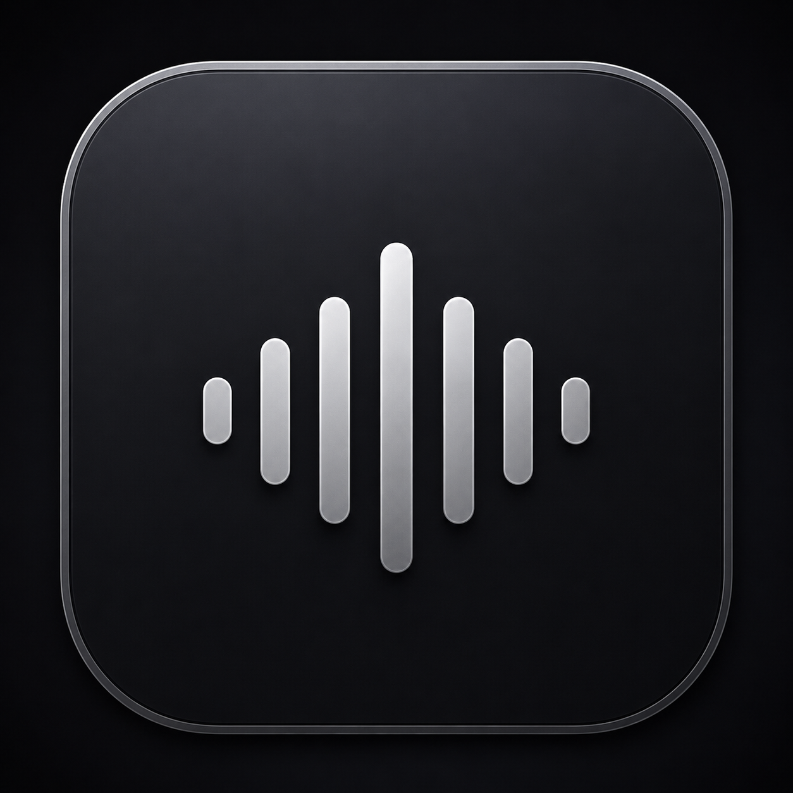

Synced Spotify lyrics
Fetches live LRC lyrics from LRCLIB and highlights the current line from Spotify playback time.

LyricsNotch DownloadFor Apple Silicon MacBooks
LyricsNotch turns the MacBook notch into a smooth live lyrics island with Spotify controls, album-art glow, and synchronized lyric highlighting.
Free community build. Open source. Built for the MacBook notch.
A focused music utility
LyricsNotch borrows the calm, polished rhythm of modern Mac software: soft depth, crisp panels, readable type, and motion that stays out of your way.
Fetches live LRC lyrics from LRCLIB and highlights the current line from Spotify playback time.
Uses album art color to create a subtle glow around the notch while music is playing.
Built with SwiftUI and AppKit, with the extra Boring Notch features removed for a focused experience.
Version 0.1.0
Open the DMG, drag LyricsNotch to Applications, then right-click and choose Open the first time because this build is not Apple-notarized.